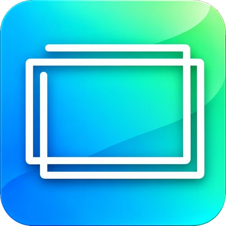

کاربردها
برای امنیت، فقط از لینکهای همین صفحه دانلود کنید.
مجموعه نرمافزاری PouOne
انتقال فایل، ارتباط VPN و چاپ میان موبایل و ویندوز؛ در یک خانواده از نرمافزارهای ساده، سریع و پایدار.
SharePou
انتقال فایل بین موبایل و ویندوز
مشاهده و دانلود
 RoutePou
برقراری ارتباط VPN بین موبایل و ویندوز
مشاهده و دانلود
RoutePou
برقراری ارتباط VPN بین موبایل و ویندوز
مشاهده و دانلود
 PrintPou
چاپ مستقیم از موبایل با پرینتر متصل به ویندوز
مشاهده و دانلود
PrintPou
چاپ مستقیم از موبایل با پرینتر متصل به ویندوز
مشاهده و دانلود
 ConnectPou
VPN اختصاصی برای اندروید و ویندوز
مشاهده و دانلود
ConnectPou
VPN اختصاصی برای اندروید و ویندوز
مشاهده و دانلود

PixPou نمایش راحت فایلهای PowerPoint؛ فقط مشاهده مشاهده و دانلودفناوری باید بیسروصدا کار کند.
PouOne مجموعهای از ابزارهای کاربردی و هوشمند است که برای سادهتر کردن ارتباط میان دستگاهها و بهتر شدن تجربهی استفاده از فناوری ساخته میشود.
هدف ما ارائهی راهکارهایی است که برای نیازهای روزمره کاربران، ساده بمانند، سریع جواب بدهند و بتوان به آنها اعتماد کرد.
PouOne مجموعهای از ابزارهای کاربردی و هوشمند برای سادهتر کردن ارتباط میان دستگاههاست. هفت محصول آن SharePou، RoutePou، PrintPou، ConnectPou، DocPou، PixPou و PlayerPou هستند.
با SharePou میتوانید فایلها را بین موبایل و ویندوز جابهجا کنید. نسخه اندروید یا ویندوز را از صفحهی محصول دانلود کنید.
ConnectPou یک VPN اختصاصی برای اندروید و ویندوز است و از خانوادهی محصولات Pou میآید.
DocPou ابزاری برای کار با اسناد Word و Google Docs است و از خانوادهی محصولات Pou میآید.
PixPou برای نمایش راحت فایلهای PowerPoint ساخته شده است؛ فقط برای مشاهده است و امکان ویرایش ندارد.
PlayerPou یک پخشکنندهی ویدیو برای اندروید و ویندوز است و از خانوادهی محصولات Pou میآید.
PrintPou امکان چاپ مستقیم از موبایل با پرینتر متصل به ویندوز را فراهم میکند.
محصولات PouOne برای اندروید و ویندوز عرضه میشوند. لینک دانلود هر نسخه در صفحهی همان محصول قرار میگیرد.
از طریق تلگرام یا ایمیل پیام بدهید؛ راههای ارتباطی در بخش «ارتباط با ما» همین صفحه آمده است.
برای پرسش، پیشنهاد یا گزارش مشکل، از طریق تلگرام یا ایمیل با ما در ارتباط باشید.
کانال تلگرام@pouone2026 پیام در تلگرام@DellFarsi farrokhzad743 [at] gmail.comارتباط رسمی ما فقط از همین راههاست. · pouone.ir · حریم خصوصی
این صفحه توضیح میدهد وبسایت PouOne چه اطلاعاتی را جمع میکند و از چه سرویسهای بیرونی استفاده میکند.
ارتباط از طریق تلگرام یا ایمیل کاملاً داوطلبانه است و پیامهای شما تابع سیاست همان سرویسهاست.
فایلهای برنامه ممکن است از سرویسهای بیرونی (مثل GitHub Releases) ارائه شوند و با باز کردن لینک، آن سرویس درخواست شما را میبیند.
توضیح دادههای هر برنامه، بهویژه RoutePou و ConnectPou که ارتباط VPN دارند، همزمان با انتشار همان برنامه در همین سایت اعلام میشود.
آخرین بهروزرسانی: ۱۸ آبان ۱۴۰۵